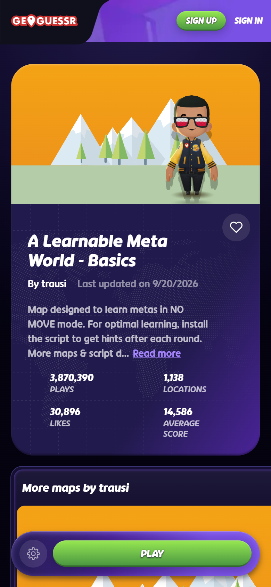
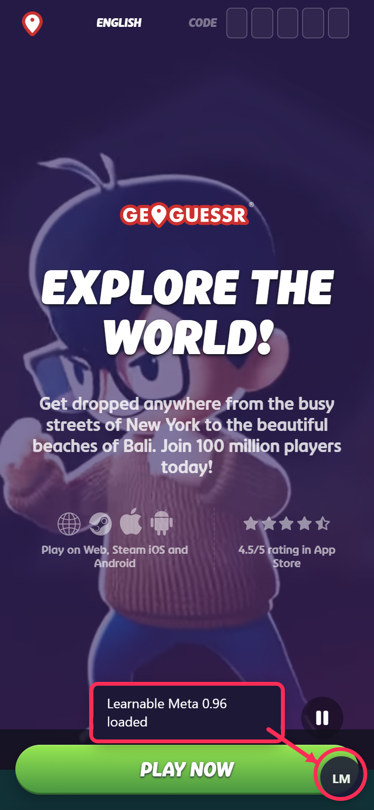

Play one tap per game
You need the LM bookmark from the Android, iPhone or Computer page first.
Open a Learnable Meta map and press Play
In the browser, not the app, go to www.geoguessr.com and log in. Open a Learnable Meta map, for example A Learnable Meta World - Basics, and press Play. The full list of maps is at learnablemeta.com/maps.

Tap the LM bookmark
When the round has loaded, tap the address bar, type LM, and tap the bookmark in the suggestions. In Safari you can also open it from the bookmarks menu. On a computer, click LM on the bookmarks bar.
You see "Loading Learnable Meta..." and then "Learnable Meta 0.96 loaded", and a round LM button appears at the bottom right.

Guess
Place your pin and press Guess. The Learnable Meta explanation for that location appears on the result screen, with a picture and a link to more clues. Press Next; the window closes and comes back after the next guess.
Good to know
- Tap the bookmark again after any full page reload, for example when you open GeoGuessr fresh or pull down to refresh. Moving between rounds and games does not reload the page, so one tap normally lasts a whole session.
- The window can be dragged and resized. If it is in the way, the LM button menu has "Reset Meta Window Layout".
- Phones are cramped. A tablet, or the browser's "Desktop site" option, gives the window more room.
- Metas only appear on Learnable Meta maps. Other maps are ignored.